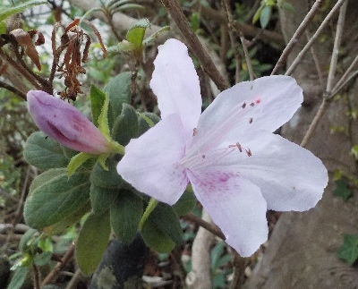
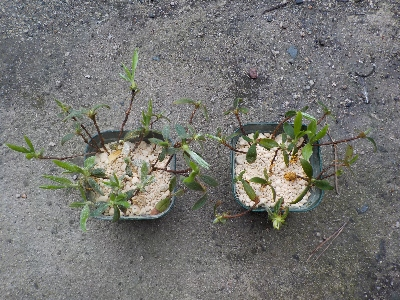
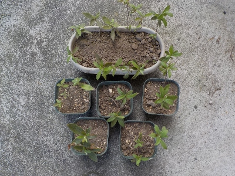
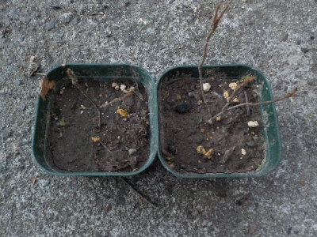
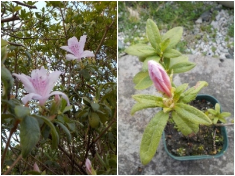

3月ですがツツジが咲きました。
更新日 : 2024/03/17

このツツジはいつも変な時期に開花してるので、もう咲いてるかもと探してみたら1つ咲いてました。
この木を挿し木して増やそうかな。
更新日 : 2024/03/17

このツツジはいつも変な時期に開花してるので、もう咲いてるかもと探してみたら1つ咲いてました。
この木を挿し木して増やそうかな。
更新日 : 2024/03/24

先日咲いていたツツジの木の枝を使って、挿し木をしました。
枝がとっても細いですが、本数を多めにしたので多分何本かは成功するでしょう。
更新日 : 2024/08/03

沢山挿し木に成功しました。5本は鉢に植え、10本は小さいプランターにまとめて植えました。
5本は普通に育てて、残りは予備にしようと思っています。
更新日 : 2024/09/27

たぶん植え方が悪くて枯れたんだと思います。
根っこが鉢上げしたときの状態のままで、その後育った感じがありませんでした。
今度予備でとってあるものを鉢上げしようと思います。
更新日 : 2026/03/29

毎年のことですが、このツツジは開花が早いです。
このツツジを使って挿し木で増やしたツツジも開花が早そうで、もうツボミが大きくなっていました。
同じDNAなので当然と言えば当然ですね。
ツツジは簡単に挿し木で増やせていいですね。